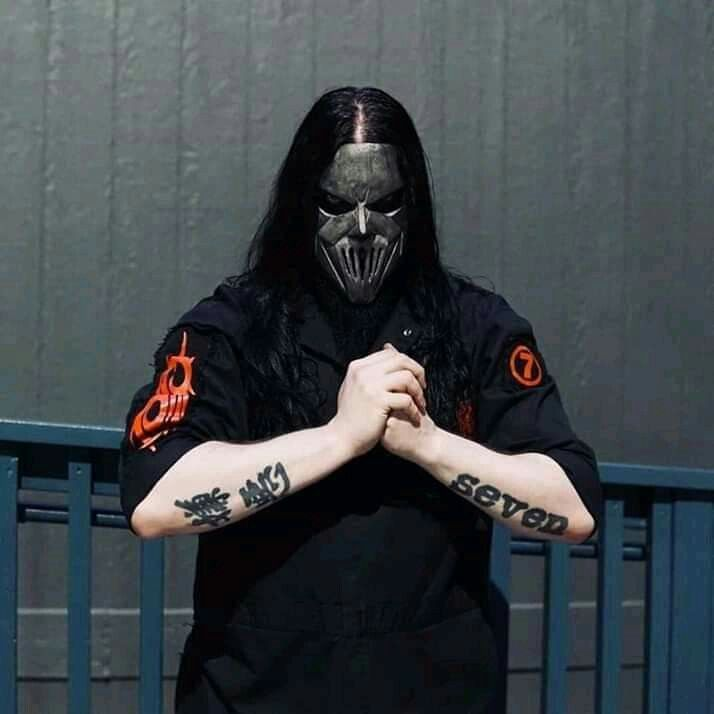
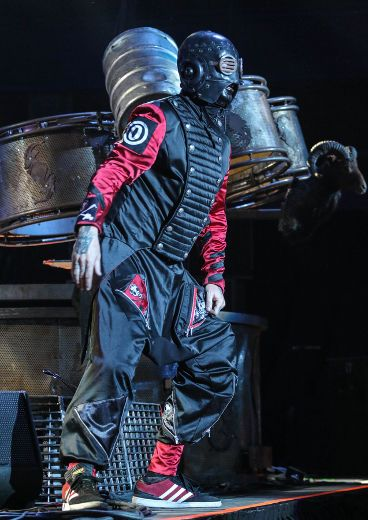
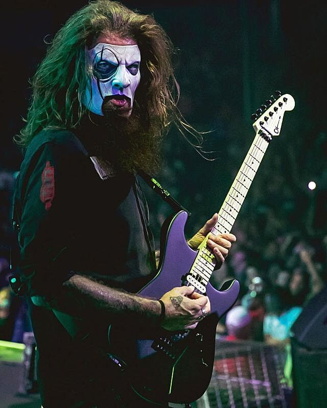
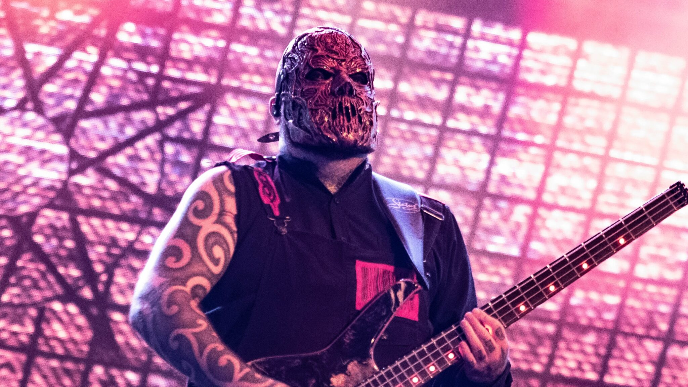
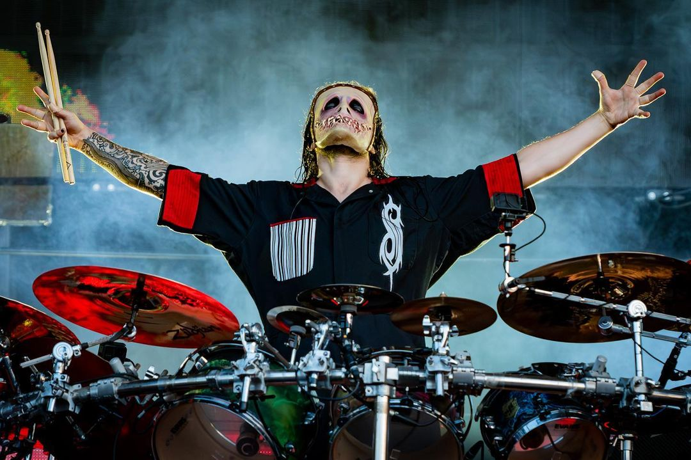

Slipknot ist eine US-amerikanische Heavy-Metal-Band aus Des Moines, Iowa. Die Band wurde 1995 gegründet und ist bekannt für ihre Masken, ihre energiegeladenen Live-Auftritte und ihren einzigartigen Sound, der eine Mischung aus Nu-Metal, Alternative Metal und Industrial ist.
Slipknot hat weltweit über 30 Millionen Alben verkauft und zahlreiche Preise gewonnen, darunter zwei Grammy Awards.
| Name | Eckdaten | Foto |
|---|---|---|
| Shawn Crahan |
Perkussion, Background-Gesang Geboren: 24. September 1969 Instrumente: Perkussion, Sampler, Vocals Frühere Bands: Modifidious |
|
| Mick Thomson |
Lead-Gitarre Geboren: 3. November 1973 Instrumente: Gitarre, Backing Vocals Frühere Bands: Stone Sour |
 |
| Corey Taylor |
Gesang Geboren: 8. Dezember 1973 Instrumente: Vocals, Percussion Frühere Bands: Stone Sour |
|
| Sid Wilson |
DJ, Background-Gesang Geboren: 20. Januar 1977 Instrumente: Turntables, Sampler, Vocals Frühere Bands: Drive Like Jehu |
 |
| Jim Root |
Rhythmus-Gitarre Geboren: 2. Oktober 1971 Instrumente: Gitarre, Backing Vocals Frühere Bands: Stone Sour |
 |
| Alessandro Venturella |
Bass Geboren: 7. März 1978 Instrumente: Bass, Backing Vocals Frühere Bands: Stone Sour |
 |
| Jay Weinberg |
Schlagzeug Geboren: 8. September 1990 Instrumente: Schlagzeug, Percussion Frühere Bands: Clown |
 |